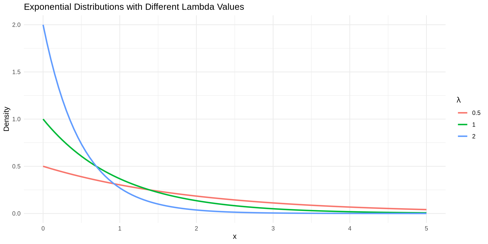
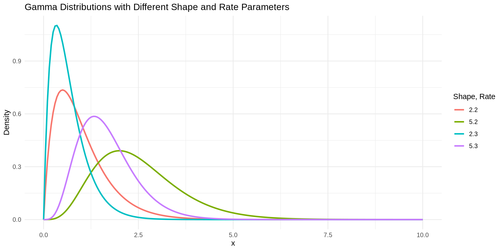
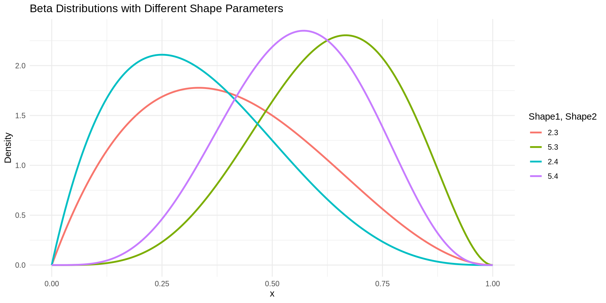

[1] 0.01666667[1] 0.6666667Definition 15.1
The PDF for a Uniform random variable with lower bound \(a\) and upper bound \(b\) is:
\[ f_X(x;a,b) = \frac{1}{b-a}, \quad x \in (a, b) \text{ and } 0 \text{ otherwise} \]
and the CDF is:
\[ F_X(x;a,b) = P(X \leq x) = \begin{cases} 0 & x < a \\ \frac{x-a}{b-a} & a \leq x \leq b \\ 1 & x > b \end{cases} \]
The mean \(\text{E}[X]\) and variance \(\text{Var}[X]\) are:
\[ \begin{align} \text{E}[X] &= \frac{a+b}{2} \\ \text{Var}[X] &= \frac{(b-a)^2}{12} \end{align} \]
The mean of a uniform random variable is derived as follows:
\[ \text{E}[X] = \int_{a}^{b} x \cdot \frac{1}{b-a} \ dx = \frac{b^2-a^2}{2(b-a)} = \frac{(b-a)(b+a)}{2(b-a)} = \frac{a+b}{2} \]
and the variance is derived by first deriving \(\text{E}[X^2]\)
\[ \begin{align} \text{E}[X^2] &= \int_{a}^{b} x^2 \cdot \frac{1}{b-a} \ dx = \frac{(b-a)(b^2 + ab + a^2)}{3(b-a)} = \frac{b^2 + ab + a^2}{3} \\ \text{Var}[X] &= \frac{b^2 + ab + a^2}{3} - \frac{(a+b)^2}{4} = \frac{b^2-2ab+a^2}{12} = \frac{(b-a)^2}{12} \end{align} \]
Example 15.1
A bus always arrives sometime between 10 and 11 am and it is equally likely to arrive at any time within that range. Let \(X\) be the amount of time that passes after 10 am before the bus arrives (in minutes, seconds, etc.).
What are \(\text{E}[X]\), \(\text{Var}[X]\), \(f_X(30;a,b)\), and \(P(X \leq 40)\)?
Example 15.2
A machine that manufactures metal rods produces rods as small as 9.8 cm and as large as 10.2 cm with all lengths in between these two values being equally likely. Let \(X\) be the length of a rod produced by this machine.
What are \(\text{E}[X]\), \(\text{Var}[X]\), \(f_X(10.1;a,b)\), and \(P(9.9 \leq X \leq 10.1)\)?
Example 15.3
Let \(X\) be the time that it takes for a webpage to load and assume that it can take anywhere from 2 to 5 seconds for the page to load with any time in there being equally likely.
What are \(\text{E}[X]\), \(\text{Var}[X]\), \(f_X(3;a,b)\), and \(P(X > 3)\)?
Definition 15.2
An Exponential distribution often models the time that passes before an event of interest occurs. The PDF for an exponential random variable with rate parameter \(\lambda\) is:
\[ f_X(x;\lambda) = \lambda e^{-\lambda x}, \quad x \in (0, \infty) \text{ and } 0 \text{ otherwise} \]
and the CDF is:
\[ F_X(x;\lambda) = P(X \leq x) = \begin{cases} 0 & x \leq 0 \\ 1-e^{-\lambda x} & x > 0 \\ \end{cases} \]
The mean \(\text{E}[X]\) and variance \(\text{Var}[X]\) are:
\[ \begin{align} \text{E}[X] &= \frac{1}{\lambda} \\ \text{Var}[X] &= \frac{1}{\lambda^2} \end{align} \]

The mean of an exponential random variable is derived as follows:
\[ \begin{align} \text{E}[X] &= \int_0^\infty x \cdot \lambda e^{-\lambda x} \ dx \\ &= \left[-x e^{-\lambda x}\right]_0^\infty + \int_0^\infty e^{-\lambda x} & \text{Integration by Parts with } u=x,dv=\lambda e^{-\lambda x} \\ &= \lim_{x \rightarrow \infty} -xe^{-\lambda x} + \left[-\frac{1}{\lambda} e^{-\lambda x}\right]_0^\infty \\ &= \lim_{x \rightarrow \infty} e^{-\lambda x} + \lim_{x \rightarrow \infty} -\frac{1}{\lambda} e^{-\lambda x} - \lim_{x \rightarrow 0} -\frac{1}{\lambda} e^{-\lambda x} & \text{L' Hopital's rule} \\ &= 0 + 0 + \frac{1}{\lambda} = \frac{1}{\lambda} \end{align} \]
The variance can be derived similarly, first by calculating \(\text{E}[X^2]\).
Example 15.4
Let \(X\) be the time that passes between large earthquakes (in hours, minutes, etc.) and assume that these times are exponentially distributed. Also assume that earthquakes occur at a rate of 2.5 earthquakes per hour.
What are \(\text{E}[X]\), \(\text{Var}[X]\), \(f_X(0.5; \lambda)\), and \(P(X > 0.5)\)?
Example 15.5
Let \(X\) be the time that passes between phone calls at a call center (in minutes, seconds, etc.) and assume that the call times are exponentially distributed. Furthermore, assume that the call center receives 2 calls every minute.
What are \(\text{E}[X]\), \(\text{Var}[X]\), \(f_X(1; \lambda)\), and \(P(X < 0.5)\)?
Example 15.6
Let \(X\) be the time that passes before the next customer arrives at a store (in hours, minutes, etc) and assume that these arrival times are exponentially distributed. Furthermore, assume that 12 customers arrive every hour.
What are \(\text{E}[X]\), \(\text{Var}[X]\), \(f_X(0.25; \lambda)\), and \(P(X > 0.1)\)?
Definition 15.3
A Gamma distribution can be used to model the total amount of time that passes before a certain number of events occur where the time between each event is exponentially distributed. If \(Y_1, Y_2, \dots, Y_\alpha\) are independent exponential random variables, each with rate \(\lambda\), then \(X = \sum_{i=1}^{\alpha} Y_i\) is a gamma random variable with PDF:
\[ f_X(x;\alpha,\lambda) = \frac{\lambda^\alpha}{\Gamma(\alpha)} x^{\alpha-1} e^{-\lambda x}, \quad x \in (0, \infty) \text{ and } 0 \text{ otherwise}. \]
Here \(\Gamma\) refers to the gamma function (gamma in R), defined as \(\Gamma(\alpha) = \int_0^\infty t^{\alpha-1} e^{-t} \ dt (= (\alpha-1)!\) for integers).
The mean \(\text{E}[X]\) and variance \(\text{Var}[X]\) are:
\[ \begin{align} \text{E}[X] &= \frac{\alpha}{\lambda} \\ \text{Var}[X] &= \frac{\alpha}{\lambda^2} \end{align} \]

The mean of a Gamma random variable is derived as follows:
\[ \begin{align} \text{E}[X] &= \int_0^\infty x \cdot \frac{\lambda^\alpha}{\Gamma(\alpha)} x^{\alpha-1} e^{-\lambda x} \ dx \\ &= \frac{\lambda^\alpha}{\Gamma(\alpha)} \int_0^\infty x^{\alpha+1-1} e^{-\lambda x} \ dx \\ &= \frac{\lambda^\alpha}{\Gamma(\alpha)} \frac{\Gamma(\alpha+1)}{\lambda^{\alpha+1}} \int_0^\infty \frac{\lambda^{\alpha+1}}{\Gamma(\alpha+1)} x^{\alpha+1-1} e^{-\lambda x} \ dx \\ &= \frac{\lambda^\alpha}{\Gamma(\alpha)} \frac{\Gamma(\alpha+1)}{\lambda^{\alpha+1}} = \frac{\alpha}{\lambda} \\ \end{align} \]
The variance can be derived similarly, first by calculating \(\text{E}[X^2]\).
Example 15.7
A call center receives 2 calls every minute and these call times are exponentially distributed. Let \(X\) be the time that passes before 5 calls are received.
What are \(\text{E}[X]\), \(\text{Var}[X]\), \(f_X(2; \alpha, \lambda)\), and \(P(X < 2)\)?
Example 15.8
It is believed that 2.5 earthquakes occur every hour and that the time between occurrences is an exponentially distributed random variable. Let \(X\) be the time that passes before 10 earthquakes occur.
What are \(\text{E}[X]\), \(\text{Var}[X]\), \(f_X(6; \alpha, \lambda)\), and \(P(X > 5)\)?
Example 15.9
A store gets about 12 customers per hour and it is believed that the times between arrivals are exponentially distributed. Let \(X\) be the time that passes before 20 customers arrive.
What are \(\text{E}[X]\), \(\text{Var}[X]\), \(f_X(1.5; \alpha, \lambda)\), and \(P(X < 3)\)?
Definition 15.4
A Beta distribution can be used to model proportions. If \(Y\) is gamma random variable with shape \(\alpha\) and rate \(\lambda\) and \(Z\) is a gamma random variable with shape \(\beta\) and rate \(\lambda\), then \(X = \frac{Y}{Y+Z}\) is a beta random variable with PDF:
\[ f_X(x;\alpha,\beta) = \frac{\Gamma(\alpha+\beta)}{\Gamma(\alpha)\Gamma(\beta)} x^{\alpha-1} (1-x)^{\beta-1}, \quad x \in (0, 1) \text{ and } 0 \text{ otherwise}. \]
The mean \(\text{E}[X]\) and variance \(\text{Var}[X]\) are:
\[ \begin{align} \text{E}[X] &= \frac{\alpha}{\alpha+\beta} \\ \text{Var}[X] &= \frac{\alpha\beta}{(\alpha+\beta)^2(\alpha+\beta+1)} \end{align} \]

The mean of a Beta random variable is derived as follows:
\[ \begin{align} \text{E}[X] &= \int_0^1 x \cdot \frac{\Gamma(\alpha+\beta)}{\Gamma(\alpha)\Gamma(\beta)} x^{\alpha-1} (1-x)^{\beta-1} \ dx \\ &= \frac{\Gamma(\alpha+\beta)}{\Gamma(\alpha)\Gamma(\beta)} \int_0^1 x^{\alpha+1-1} (1-x)^{\beta-1} \ dx \\ &= \frac{\Gamma(\alpha+\beta)}{\Gamma(\alpha)\Gamma(\beta)} \frac{\Gamma(\alpha+1)\Gamma(\beta)}{\Gamma(\alpha+1+\beta)}\int_0^1 \frac{\Gamma(\alpha+1+\beta)}{\Gamma(\alpha+1)\Gamma(\beta)} x^{\alpha+1-1} (1-x)^{\beta-1} \ dx \\ &= \frac{\Gamma(\alpha+\beta)}{\Gamma(\alpha)\Gamma(\beta)} \frac{\Gamma(\alpha+1)\Gamma(\beta)}{\Gamma(\alpha+1+\beta)} = \frac{\alpha}{\alpha+\beta} \\ \end{align} \]
The variance can be derived similarly, first by calculating \(\text{E}[X^2]\).
Example 15.10
Two call centers, A and B, both receive about 4 calls every minute. Assume the times between calls are exponentially distributed. You are 6th in a queue to speak to someone at call center A and your friend is 4th in queue to speak to someone at call center B. Let \(X\) be the proportion of time you spend waiting out of the total time you and your friend wait.
What are \(\text{E}[X]\), \(\text{Var}[X]\), \(f_X(0.5; \alpha, \beta)\), and \(P(X < 0.5)\)?
Example 15.11
Two stores, A and B, both receive about 10 customers each hour. Assume the times between arrivals are exponentially distributed. Mohamed is waiting for the 15th customer to arrive and at store A and Keiko is waiting for the 19th customer to arrive at store B. Let \(X\) be the proportion of time that Keiko waits out of the total time that both Mohamed and Keiko wait.
What are \(\text{E}[X]\), \(\text{Var}[X]\), \(f_X(0.7; \alpha, \beta)\), and \(P(X > 0.5)\)?
Example 15.12
Two countries, A and B, both experience about 5 earthquakes an hour. Assume the times between earthquakes are exponentially distributed. Country A is waiting for their 10th earthquake and country B is waiting for their 12th earthquake. Let \(X\) be the proportion of time that country A spends waiting out of the total time that country A and B spend waiting.
What are \(\text{E}[X]\), \(\text{Var}[X]\), \(f_X(0.3; \alpha, \beta)\), and \(P(X < 0.6)\)?